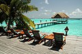

أهلا بكم
المالديف أو المَلَديف ورسميًا جمهورية المالديف هي دولة أرخبيلية مسلمة تقع في قارة آسيا في المحيط الهندي، ويمر عليها خط الاستواء جنوبًا، وتقع جنوب غرب سريلانكا والهند. تمتد سلسلة من ست وعشرين جزيرة من الجزر المرجانية بدءًا من جزيرة ايهافنداهيبولو (Ihavandhippolhu) في الشمال إلى مدينة أدو في الجنوب، تتألف من مساحة تبلغ 298 كيلو متر مربع تقريبًا (115 ميل مربع)، وكان يسميها العرب قديمًا ذيبة المَهَل أو محلديب ويُرجح أنه قد حُرِفَ وأصبح ينطق مالديف. حكمت بريطانيا جزر المالديف 78 سنة بوصفها محمية بريطانية، وقد استقلت جزر المالديف في عام 1965م، واسمها في اللغة الرسمية هو الديفي الراجي (جمهورية المالديف)، ويبلغ عدد سكانها 309 ألف نسمة في كم مربع وعاصمتها ماليه. وجزر المالديف عضو في دول الكومنولث وقد انضمت في 1982م.جزر المالديف تشمل تقريباً 1.190 جزيرة مرجانية جمعت في سلسلة مضاعفة من 26 جزيرة مرجانية. إن الجزر المرجانية متكونة من الشقوق المرجانية الحية والحواجز الترابية، ويبلغ طول أسفل حافة تحت مستوى سطح البحر 960 كم التي ترتفع فجأةً من أعماق المحيط الهندي
تعرف اكثر على المالديف من خلال هذا الرابط